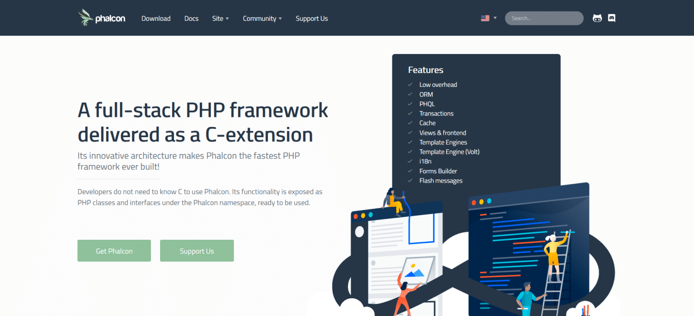

- Phalcon -
Phalcon - это фреймворк PHP, созданный для скорости. Он поставляется в виде расширения веб-сервера, написанного на Zephir и C. Знание C не требуется. Разработчики работают с классами PHP и пространствами имен, которые генерирует фреймворк.
- Плюсы Phalcon -
Phalcon разработан для быстрой работы, поскольку обладает следующими функциями:
- Низкоуровневая архитектура.
- Единовременная загрузка Zephir, расширений C и PHP.
- Код компилируется, а не интерпретируется, поэтому он быстрее.
- Резидентная память, что означает, что к ней можно обращаться всякий раз, когда это необходимо.
- Не использует чтение файлов и статистику файлов, в отличие от большинства других фреймворков PHP, что приводит к повышению производительности.
Поскольку Phalcon слабо связан, вы можете создать свою собственную структуру каталогов. Код Phalcon не находится в каталоге проекта, что делает код легким.
Компонент безопасности Phalcon помогает с хешированием паролей и защитой CSRF.
Движок шаблонов Phalcon, Volt, чрезвычайно быстр и поставляется со вспомогательными классами для простого создания представлений.
Вы можете обратиться за поддержкой к Phalcon через их документацию, форумы, чат Discord, Stack Overflow и несколько платформ социальных сетей.
Краткие характеристики
Запущен: ноябрь 2012
Текущая версия: v5
Технические требования:
- Расширение PSR
- PHP 7.4 + (рекомендуется последняя версия)